|
| 泡菜 |
材料: 大白菜(蘿蔔, 黃瓜 等), 蘿蔔條, 辣椒粉, 切碎的大蒜,
切碎的蔥, 魚蝦醬, 鹽 等
辛辣與否: 辣味
介紹: 大白菜等各種蔬菜裡加入鹽及各種配料後，經過一段時間的發酵。白菜泡菜、黃瓜泡菜、蘿蔔塊泡菜…等。有機酸、無機礦物質、維他命
等豐富的營養素。 |
|
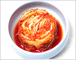 |
| 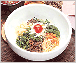 |
| 拌飯 |
材料: 飯, 蕨菜, 桔梗, 黃豆芽, 牛肉, 辣椒醬, 芝麻油
等
辛辣與否: 有點辣
介紹: 各種蔬菜類和飯一起拌著吃。
各種蔬菜被整齊、漂亮的放在飯上，不僅美觀而且含有豐富的營養素。以全州拌飯最為有名。 |
|
| 烤肉 |
材料: 牛肉(豬肉), 梨子汁 或者 糖, 醬油, 切碎的大蒜,
切碎的蔥, 芝麻油 等
辛辣與否: 否
介紹: 把牛肉或豬肉切成薄片後經過調味再火烤。 |
|
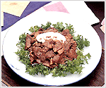 |
| 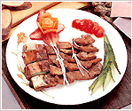 |
| 烤牛小排(佐醬) |
材料: 牛小排(豬排), 糖, 醬油, 切碎的蔥, 切碎的大蒜, 芝麻油
等
辛辣與否: 否
介紹: 牛小排經過佐料醃製後再用碳火烤。水原的烤牛小排最有名。 |
|
| 蔘雞湯 |
材料: 雞, 糯米, 人蔘, 大蒜, 栗子, 紅棗 等
辛辣與否: 否
介紹: 把雞的內臟等清空後，再放入各種材料蒸煮。 |
|
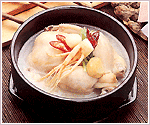 |
| 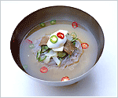 |
| 水冷麵 |
材料: 喬麥麵或馬鈴薯為原料所製成的麵, 肉湯, 肉片(牛肉), 黃瓜絲,
水梨絲, 水煮蛋 等
辛辣與否: 否
介紹: 把麵放入冷卻的牛骨湯裡而食用。 湯的味道清淡而爽口。
還有一種是以辣椒醬調味的辣味涼拌冷麵。 |
|
| 海鮮湯 |
材料: 螃蟹, 蛤, 蝦, 海螺, 魚, 蘿蔔, 辣椒醬, 辣椒粉, 蔥,
大蒜 等
辛辣與否: 非常辣
介紹: 放入各種海鮮後用大火煮，並放入辣椒醬和辣椒粉突顯湯頭。充滿辣味的海鮮湯是這道菜的特點。 |
|
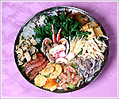 |
| 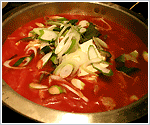 |
| 泡菜湯 |
材料: 泡菜, 豬肉, 芝麻油, 蔥, 大蒜 等
辛辣與否: 非常辣
介紹: 先把豬肉炒過後，再放入水和泡菜。使用較酸的泡菜，泡菜湯的味道會更好。 |
|
| 烤雞排 |
材料: 雞, 辣椒醬, 辣椒粉, 梨子汁, 糖稀, 糖, 切碎的大蒜,
切碎的蔥 等
辛辣與否: 辣
介紹: 烤雞排是江原道春川的代表料理。把雞肉塊加辣椒醬佐料拌勻，在和各種材料一起炒。 |
|
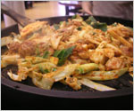 |
| 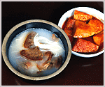 |
| 牛雜碎湯(雪濃湯) |
材料: 飯, 牛肉, 牛肉湯, 切碎的蔥, 切碎的大蒜, 辣椒粉,
胡椒粉, 鹽 等
辛辣與否: 否
介紹: 在燉煮牛骨和牛胸脯肉而製成的湯中加放肉片、蔥花等與白米飯一起食用。湯需熬煮10個小時以上。 |
|
| 排骨湯 |
材料: 牛小排(豬排), 蘿蔔, 切碎的蔥, 切碎的大蒜, 胡椒粉,
芝麻油, 芝麻 等
辛辣與否: 否
介紹: 清爽的湯頭與煮得熟爛的排骨肉合為一體。湯裡也可以加蘿蔔或冬粉。 |
|
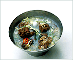 |
| 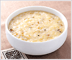 |
| 粥 |
材料: 各種 穀料
辛辣與否: 否
介紹: 放入穀料約 6-7倍的水然後熬煮。
松子粥、芝麻粥、棗子粥、紅豆粥、牛肉粥、南瓜粥…等所需材料各不相同。 |
|
|